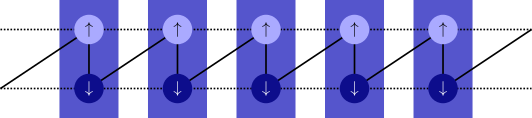

Fermions and the Jordan-Wigner transformation¶
The Jordan-Wigner tranformation maps fermionic creation- and annihilation operators to (bosonic) spin-operators.
Spinless fermions in 1D¶
Let’s start by explicitly writing down the transformation. With the Pauli matrices \(\sigma^{x,y,z}_j\) and \(\sigma^{\pm}_j = (\sigma^x_j \pm \mathrm{i} \sigma^y_j)/2\) on each site, we can map
The \(n_l\) in the second and third row are defined in terms of Pauli matrices according to the first row. We do not interpret the Pauli matrices as spin-1/2; they have nothing to do with the spin in the spin-full case. If you really want to interpret them physically, you might better think of them as hard-core bosons (\(b_j =\sigma^{-}_j, b^\dagger_j=\sigma^{+}_j\)), with a spin of the fermions mapping to a spin of the hard-core bosons.
Note that this transformation maps the fermionic operators \(c_j\) and \(c^\dagger_j\) to global operators; although they carry an index j indicating
a site, they actually act on all sites l <= j!
Thus, clearly the operators C and Cd defined in the FermionSite do not directly correspond to \(c_j\) and
\(c^\dagger_j\).
The part \((-1)^{\sum_{l < j} n_l}\) is called Jordan-Wigner string and in the FermionSite is given by the local operator
\(JW := (-1)^{n_l}\) acting all sites l < j.
Since this important, let me stress it again:
Warning
The fermionic operator \(c_j\) (and similar \(c^\dagger_j\)) maps to a global operator consisting of
the Jordan-Wigner string built by the local operator JW on sites l < j and the local operator C (or Cd, respectively) on site j.
On the sites itself, the onsite operators C and Cd in the FermionSite fulfill the correct anti-commutation relation, without the need to include JW strings.
The JW string is necessary to ensure the anti-commutation for operators acting on different sites.
Written in terms of onsite operators defined in the FermionSite,
with the i-th entry entry in the list acting on site i, the relations are thus:
["JW", ..., "JW", "C", "Id", ..., "Id"] # for the annihilation operator
["JW", ..., "JW", "Cd", "Id", ..., "Id"] # for the creation operator
Note that "JW" squares to the identity, "JW JW" == "Id",
which is the reason that the Jordan-wigner string completely cancels in \(n_j = c^\dagger_j c_j\).
In the above notation, this can be written as:
["JW", ..., "JW", "Cd", "Id", ..., "Id"] * ["JW", ..., "JW", "C", "Id", ..., "Id"]
== ["JW JW", ..., "JW JW", "Cd C", "Id Id", ..., "Id Id"] # by definition of the tensorproduct
== ["Id", ..., "Id", "N", "Id", ..., "Id"] # by definition of the local operators
# ("X Y" stands for the local operators X and Y applied on the same site. We assume that the "Cd" and "C" on the first line act on the same site.)
For a pair of operators acting on different sites, JW strings have to be included for every site between the operators.
For example, taking i < j,
\(c^\dagger_i c_j \leftrightarrow \sigma_i^{+} (-1)^{\sum_{i <=l < j} n_l} \sigma_j^{-}\).
More explicitly, for j = i+2 we get:
["JW", ..., "JW", "Cd", "Id", "Id", "Id", ..., "Id"] * ["JW", ..., "JW", "JW", "JW", "C", "Id", ..., "Id"]
== ["JW JW", ..., "JW JW", "Cd JW", "Id JW", "Id C", ..., "Id"]
== ["Id", ..., "Id", "Cd JW", "JW", "C", ..., "Id"]
In other words, the Jordan-Wigner string appears only in the range i <= l < j, i.e. between the two sites and on the smaller/left one of them.
(You can easily generalize this rule to cases with more than two \(c\) or \(c^\dagger\).)
This last line (as well as the last line of the previous example) can be rewritten by changing the order of the operators Cd JW to "JW Cd" == - "Cd".
(This is valid because either site i is occupied, yielding a minus sign from the JW, or it is empty, yielding a 0 from the Cd.)
This is also the case for j < i, say j = i-2:
\(c^\dagger_i c_j \leftrightarrow (-1)^{\sum_{j <=l < i} n_l} \sigma_i^{+} \sigma_j^{-}\).
As shown in the following, the JW again appears on the left site,
but this time acting after C:
["JW", ..., "JW", "JW", "JW", "Cd", "Id", ..., "Id"] * ["JW", ..., "JW", "C", "Id", "Id", "Id", ..., "Id"]
== ["JW JW", ..., "JW JW", "JW C", "JW", "Cd Id", ..., "Id"]
== ["Id", ..., "Id", "JW C", "JW", "Cd", ..., "Id"]
Higher dimensions¶
For an MPO or MPS, you always have to define an ordering of all your sites. This ordering effectifely maps the higher-dimensional lattice to a 1D chain, usually at the expence of long-range hopping/interactions. With this mapping, the Jordan-Wigner transformation generalizes to higher dimensions in a straight-forward way.
Spinful fermions¶
As illustrated in the above picture, you can think of spin-1/2 fermions on a chain as spinless fermions living on a ladder (and analogous mappings for higher dimensional lattices).
Each rung (a blue box in the picture) forms a SpinHalfFermionSite
which is composed of two FermionSite (the circles in the picture) for spin-up and spin-down.
The mapping of the spin-1/2 fermions onto the ladder induces an ordering of the spins, as the final result must again be a one-dimensional chain, now containing both spin species.
The solid line indicates the convention for the ordering, the dashed lines indicate spin-preserving hopping \(c^\dagger_{s,i} c_{s,i+1} + h.c.\)
and visualize the ladder structure.
More generally, each species of fermions appearing in your model gets a separate label, and its Jordan-Wigner string
includes the signs \((-1)^{n_l}\) of all species of fermions to the ‘left’ of it (in the sense of the ordering indicated by the solid line in the picture).
In the case of spin-1/2 fermions labeled by \(\uparrow\) and \(\downarrow\) on each site, the complete mapping is given (where j and l are indices of the FermionSite):
In each of the above mappings the operators on the right hand sides commute; we can rewrite
\((-1)^{\sum_{l < j} n_{\uparrow,l} + n_{\downarrow,l}} = \prod_{l < j} (-1)^{n_{\uparrow,l}} (-1)^{n_{\downarrow,l}}\),
which resembles the actual structure in the code more closely.
The parts of the operator acting in the same box of the picture, i.e. which have the same index j or l,
are the ‘onsite’ operators in the SpinHalfFermionSite:
for example JW on site j is given by \((-1)^{n_{\uparrow,j}} (-1)^{n_{\downarrow,j}}\),
Cu is just the \(\sigma^{-}_{\uparrow,j}\), Cdu is \(\sigma^{+}_{\uparrow,j}\),
Cd is \((-1)^{n_{\uparrow,j}} \sigma^{-}_{\downarrow,j}\).
and Cdd is \((-1)^{n_{\uparrow,j}} \sigma^{+}_{\downarrow,j}\).
Note the asymmetry regarding the spin in the definition of the onsite operators:
the spin-down operators include Jordan-Wigner signs for the spin-up fermions on the same site.
This asymetry stems from the ordering convention introduced by the solid line in the picture, according to which the spin-up site
is “left” of the spin-down site. With the above definition, the operators within the same SpinHalfFermionSite fulfill the expected commutation relations,
for example "Cu Cdd" == - "Cdd Cu", but again the JW on sites left of the operator pair is crucial to get the correct
commutation relations globally.
Warning
Again, the fermionic operators \(c_{\downarrow,j}, c^\dagger_{\downarrow,j}, c_{\downarrow,j}, c^\dagger_{\downarrow,j}\) correspond to global operators consisting of
the Jordan-Wigner string built by the local operator JW on sites l < j and the local operators 'Cu', 'Cdu', 'Cd', 'Cdd' on site j.
Written explicitly in terms of onsite operators defined in the FermionSite,
with the j-th entry entry in the list acting on site j, the relations are:
["JW", ..., "JW", "Cu", "Id", ..., "Id"] # for the annihilation operator spin-up
["JW", ..., "JW", "Cd", "Id", ..., "Id"] # for the annihilation operator spin-down
["JW", ..., "JW", "Cdu", "Id", ..., "Id"] # for the creation operator spin-up
["JW", ..., "JW", "Cdd", "Id", ..., "Id"] # for the creation operator spin-down
As you can see, the asymmetry regaring the spins in the definition of the local onsite operators "Cu", "Cd", "Cdu", "Cdd" lead to a symmetric definition in the global sense.
If you look at the definitions very closely, you can see that in terms like ["Id", "Cd JW", "JW", "Cd"] the
Jordan-Wigner sign \((-1)^{n_\uparrow,2}\) appears twice (namely once in the definition of "Cd" and once in the "JW" on site
2) and could in principle be canceled, however in favor of a simplified handling in the code we do not recommend you to cancel it.
Similar, within a spinless FermionSite, one can simplify "Cd JW" == "Cd" and "JW C" == "C",
but these relations do not hold in the SpinHalfSite,
and for consistency we recommend to explicitly keep the "JW" operator string even in nearest-neighbor models where it is not strictly necessary.
How to handle Jordan-Wigner strings in practice¶
There are only a few pitfalls where you have to keep the mapping in mind: When building a model, you map the physical fermionic operators to the usual spin/bosonic operators. The algorithms don’t care about the mapping, they just use the given Hamiltonian, be it given as MPO for DMRG or as nearest neighbor couplings for TEBD. Only when you do a measurement (e.g. by calculating an expectation value or a correlation function), you have to reverse this mapping. Be aware that in certain cases, e.g. when calculating the entanglement entropy on a certain bond, you cannot reverse this mapping (in a straightforward way), and thus your results might depend on how you defined the Jordan-Wigner string.
Whatever you do, you should first think about if (and how much of) the Jordan-Wigner string cancels.
For example for many of the onsite operators (like the particle number operator N or the spin operators in the SpinHalfFermionSite)
the Jordan-Wigner string cancels completely and you can just ignore it both in onsite-terms and couplings.
To check, whether the Jordan-Wigner string cancels for a given operator,
take a look at need_JW_string and op_needs_JW().
In case of operators acting on different sites, you typically have a Jordan-Wigner string inbetween (e.g. for the
\(c^\dagger_i c_j\) examples described above and below) or no Jordan-Wigner strings at all (e.g. for density-density
interactions \(n_i n_j\)).
In fact, the case that the Jordan Wigner string on the left of the first non-trivial operator does not cancel is currently not supported
for models and expectation values, as it usually doesn’t appear in practice.
When building a model with the CouplingModel,
onsite terms for which the Jordan-Wigner string cancels can be added directly.
Care has to be taken when adding couplings with add_coupling().
When you need a Jordan-Wigner string inbetween the operators, set the optional arguments op_string='JW', str_on_first=True.
Then, the function automatically takes care of the Jordan-Wigner string in the correct way, adding it on the left
operator. With the default arguments, it is checked automatically whether the model
Obviously, you should be careful about the convention which of the two coupling terms is applied first (in a physical sense as an operator acting on a state), as this corresponds to a sign. We follow the convention that the operator given as argument op2 is applied first, independent of wheter it ends up left or right in the MPS ordering sense.
As a concrete example, let us specify a hopping
\(\sum_{\langle i, j\rangle} (c^\dagger_i c_j + h.c.) = \sum_{\langle i, j\rangle} (c^\dagger_i c_j + c^\dagger_j c_i)\)
in a 1D chain of FermionSite with add_coupling():
add_coupling(strength, 0, 'Cd', 0, 'C', 1, 'JW', True)
add_coupling(strength, 0, 'Cd', 0, 'C', -1, 'JW', True)
# (without the last 2 arguments, add_coupling checks for necessary JW strings automatically)
Slightly more complicated, to specify the hopping \(\sum_{\langle i, j\rangle, s} (c^\dagger_{s,i} c_{s,j} + h.c.)\) in the Fermi-Hubbard model on a 2D square lattice, we would need more terms:
for (dx, dy) in [(1, 0), (-1, 0), (0, 1), (0, -1)]:
add_coupling(strength, 0, 'Cdu', 0, 'Cu', (dx, dy), 'JW', True)
add_coupling(strength, 0, 'Cdd', 0, 'Cd', (dx, dy), 'JW', True)
If you want to build a model directly as an MPO or with nearest-neighbor bonds only, you have to care about how to handle the Jordan-Wigner string correctly.
The most important functions for doing measurements are probably expectation_value()
and correlation_function(). Again, if all the Jordan-Wigner strings cancel, you don’t have
to worry about them at all, e.g. for many onsite operators or correlation functions involving only number operators.
If you measure operators involving multiple sites with expectation_value, take care to include the Jordan-Wigner
string correctly while building these operators.
The correlation_function() supports a Jordan-Wigner string in between the two operators to
be measured. As for add_coupling(), you should set the optional arguments op_string='JW', str_on_first=True in that case.
Functions like expectation_value_term() also care about the Jordan Wigner string (if specified in the documentation).